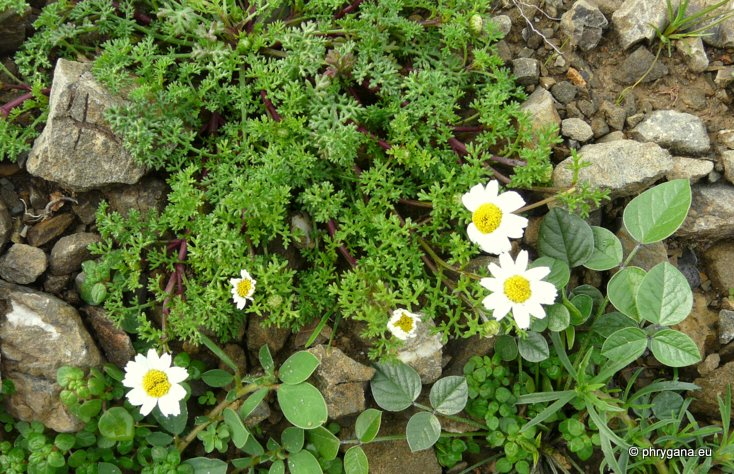
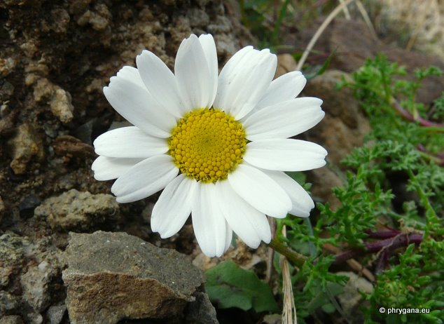
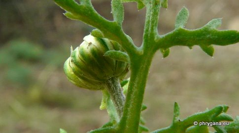
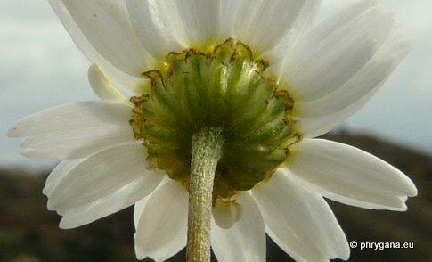
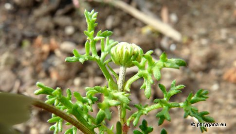
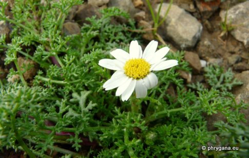
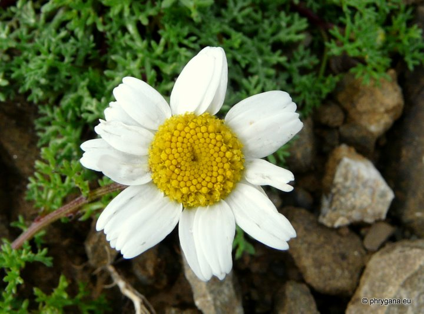

| PHRYGANA | Fauna | Flora |
additions nouveautés |
espèces species |
contact -
info - commentaires phrygana1 (at) gmail.com |
| Particularités crétoises | Galles et mines |
| Anthemis arvensis subsp. incrassata (LOISEL.) NYMAN |
| 306 | Flora | ASTERACEAE | Anthemideae Cass. | Anthemis L. |
|
 Anthemis arvensis subsp. incrassata Agios Giorgos (Melambes) 07 janvier 2012 |
| en: Corn Chamomille | |
| Plante herbacée aromatique, poilue, ascendante à dressée, avec souvent des branches rampantes-ascendantes | |
| Feuilles: oblongues, ipennatiséquées, à segments linéaires, pointus, poilus surtout sur la face inférieure | |
| Tige ramifiée dès la base, les branches latérales plus longues que la tige centrale | |
| Fleurs: capitules avec un diamètre 20 - 30 mm; fleurs tubulées jaunes; fleurs ligulées blanches (11 x4 mm); pédoncule sous le capitule devenant claviforme lorsqu'en fruit; bractées à bord scarieux, brun transparent clair à brun foncé; réceptacle conique, à écailles linéaires-lancéolées devant brusquement acuminées; | |
| Fruit: akène à côtes lisses, long de 1.5 - 2 mm, lisses, surmontés d'un rebord; | |
| Hauteur: (5-) 10 - 50 cm | Type biologique: thérophyte ramifié |
| Floraison: janvier février mars avril mai juin (-juillet) | |
| Altitudes: 0 - 1050 m | |
| Statut en Crète: indigène -- native | |
| Biotopes en Crète: sols dénudés, terrains vagues, champs cultivés ou abandonnés | |
| Distribution: région Méditerranéenne européenne, Maroc | |
| Espèce calcifuge | |
|
 Anthemis arvensis subsp. incrassata Agios Giorgos (Melambes) 07 janvier 2012 |
|

 Anthemis arvensis subsp. incrassata Agios Giorgos (Melambes) 07 janvier 2012 |
|

 Anthemis arvensis subsp. incrassata Agios Giorgos (Melambes) 07 janvier 2012 |
|
 Anthemis arvensis subsp. incrassata Agios Giorgos (Melambes) 07 janvier 2012 |
| 09 janvier 2012 |
| © paul fontaine -- © Phrygana.eu 2007 -- 2013 |